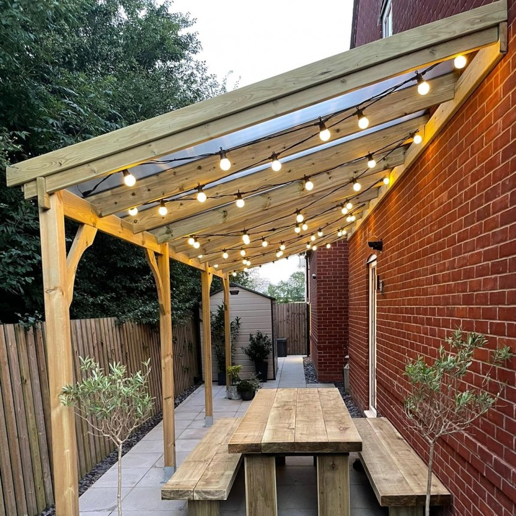

Resumen
Este es un pequena galeria de fotos restauradas que nos muestran como era el municipio hace tiempo.puedes colaborar mandando una foto antigua que tengas no importa el estado, trataremos de restaurarla para subirla preciona colaborar o ponte en contacto atraves de el corre correopersonal@proton.me
-

